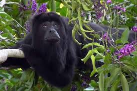
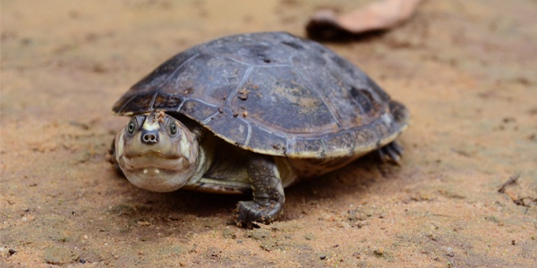

Fauna De Chiapas
Chiapas, el estado más meridional de México, es el hogar de una impresionante variedad de especies endémicas, que no se encuentran en ninguna otra parte del mundo. Chiapas cuenta con una gran diversidad biológica, de flora y fauna. Estos tesoros naturales únicos están adaptados a los diversos ecosistemas de la región, desde las montañas, como los Altos de Chiapas, hasta las selvas tropicales. Los siguentes son, algunos de los animales endémicos más destacados de Chiapas.
Los monos aulladores son mamíferos diurnos, con pelaje totalmente negro, hábitos arbóreos, cola prensil, y herbívoros. Se congregan en pequeños grupos sociales permanentes denominados tropas. Se distribuyen en ambientes húmedos tropicales. El mono saraguato es de talla grande, tiene un cráneo ancho y robusto, con un rostro relativamente plano y mandíbula prominente, cuerpo rechoncho con extremidades relativamente desarrolladas y gruesas, manos con cinco dedos sin pulgar oponible; cola larga y prensil carente de pelo en la punta. Coloración negra tanto en los costados como en la parte ventral; pelo denso de color negro brillante, especialmente largo en el ment n donde forma una barba. Existe un marcado dimorfismo sexual, ya que los machos son muchos más grandes que las hembras. La principal amenaza para la especie es la pérdida de su hábitat.
Los monos se comen los frutos y se tragan las semillas, así las transportan dentro de su cuerpo a un sitio diferente de donde las ingieren. Al excretarlas caen en lugares apropiados para crecer y originar una nueva planta.

Tortuga dulceacuícola de tamaño mediano-grande, sexualmente dimórfica con las hembras más grandes que los machos. Las hembras presentan un angostamiento en la parte posterior del caparazón y los machos poseen colas más largas y anchas y, en contraste con las hembras, la cloaca esta localizada posteriormente a las escamas marginales. Según algunos datos, las hembras pueden alcanzar un tamaño máximo de 460 mm y pesar 8 kg mientras que los machos presentan una longitud de 360 mm. La coloración de esta especie varía entre gris pizarra, café-oliváceo y gris-oliváceo. Las crías y juveniles no poseen manchas claras sobre la región interparietal y la cabeza es de color gris oliváceo, con una difusa banda amarillo pálido entre el borde del ojo y el margen superior del tímpano. Estas marcas faciales se conservan en los machos adultos y desaparecen en las hembras. Esta especie es principalmente herbívora, y al menos en cautiverio se ha visto que los juveniles pueden usar de forma oportunista material animal y perseguir y consumir peces pequeños.
Hábitat: La Podocnemis lewyana habita en ríos, caños, ciénagas y áreas inundadas conectadas a los ríos. Se asolea en las playas o barrancos a lo largo de las orillas o sobre árboles caído, ya sea individualmente o en grupos. Anida en bancos y playas arenosas que se forman cuando desciende el nivel de los r os durante el verano. Actualmente una población aislada prospera en la represa de Prado en el departamento de Tolima.
